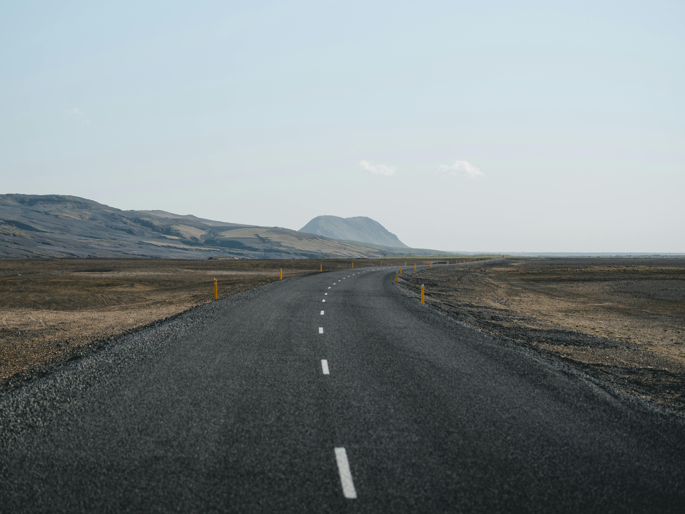

Iceland, where I have never been but drinming to visit, has beautiful nature, culture, unique food and people. I would like to describe this wounderful countr by diving into several categolies.
Why Iceland?
When I was a kid, I had no interest any other countries to visit. Because I am an Japanese and hated learning English and wishing to juist stay in my country. However, I had a change of heart, wanting to study English and travel to various coountries, and around at that time, I was influenced by a movie II watched and decided I want to go to Iceland. It is called "Seacret Life of Walter Mitty"

Photoby Matt Hardry on Pexels
Where is Iceland
Iceland is located in North part of Atlantic Ocean Between North America and Europ and it is part of Europ. also it is below the Arctic Circle, which means it experiences long summer days and dark winter nights.People are speaking Iceladic and ,ost of populations are speaking it.
Photoby Tomas Malik on Pexels
Fun Activities
Hot Spring
Iceland is a country known for its numerous volcanoes and is famous for its many hot springs. Among them, the most famous is the Blue Lagoon, one of the most popular tourist attractions in Iceland and a must-see for anyone visiting the country. While the hot springs themselves are famous, the mud packs are also well-known, and you often see visitors with mud applied to their faces.
Photoby Easy Wheeling on Pexels
Recommend palce to viasit
Icaland, in this beautifl I would recommend few places, where also filmed in Seacret Life of Walter Mitty.
Skogafoss Waterfall — This waterfall is different from the kind of waterfall you might imagine when you hear the word "waterfall." Unlike waterfalls found in forests or other secluded areas, this one is located in an open area, allowing you to truly appreciate its power and grandeur. This location is also featured in the movie I mentioned earlier.
Photoby Suju on Pexels
Seyoisfjorour — This place itself isn't a clearly defined location, but it would be easier to understand if you watched the movie I mentioned. This is the place that made me want to visit Iceland. It's located on the eastern side of Iceland, and the road leading to Seyðisfjörður is very scenic and beautiful.
Photoby Easy Animesh Paul on Pexels
Kirkjufellsfoss — This place is one of Iceland's famous tourist spots, and I wanted to visit it after seeing photos of it in winter with the aurora borealis. The small, snow-covered mountains, the small river in front, and the aurora spreading across the sky are something you can only see here. I also recommend seeing it during the warmer months when there is no snow and everything is lush green.
Vatnajokull National Park — In this national park, you'll be able to see things that are not just beautiful in the conventional sense, but truly awe-inspiring, unlike anything you'd see in other countries. One of the things you can see here is a glacier. While it may not require much explanation, this massive block of ice, which has existed since ancient times, is a testament to the history of nature itself. And another is a waterfall. However, it's not just an ordinary waterfall, but something unique to Iceland. Its name is Svartifoss, one of the most famous waterfalls in Iceland, formed by lava flowing down the Skaftafellsheiði plain and filling in an old riverbed.
Photoby Aliona Pasha on Pexels
Eyjafjallajokull — It might be difficult to see this location and the erupting volcano as depicted in the movie, but I highly recommend searching for photos of it. Although it's a country famous for its volcanoes, seeing the white snow and the red magma together is a beautiful sight that you won't find anywhere else.
Food in Iceland
Icelandic cuisine is simple yet highly distinctive, making abundant use of fresh, local ingredients. Surrounded by the sea, fish plays a crucial role in the Icelandic diet. Grilled salmon, cod, and plokkfiskur, a creamy fish stew, are all very popular. Lamb, raised in the pristine environment of the mountainous regions, is also favored by many for its tenderness and rich flavor. For dessert, skyr, a thick and healthy yogurt that has been consumed for hundreds of years, is a popular choice. While some traditional dishes, such as fermented shark meat, may surprise visitors, experiencing the local cuisine is undoubtedly one of the highlights of a trip to Iceland.